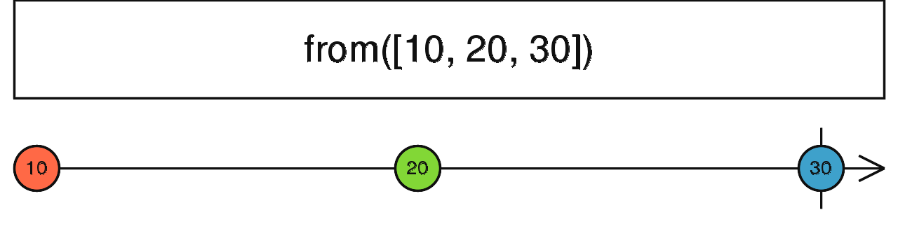
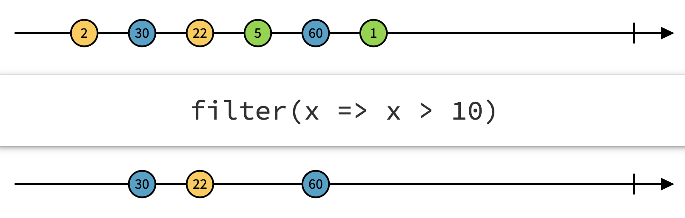

12 掌握响应式编程基础¶
RxJS 是 Reactive Extensions For JavaScript 的简写，它是一个Reactive流库，Reactive是指响应式编程（Reactive Programming）。RxJS库已经集成在Angular中了，可以使用它进行响应式编程。
12.1 响应式编程的基本概念¶
在计算机中，响应式编程或反应式编程（英语：Reactive programming）是一种面向数据流和变化传播的编程范式。这意味着可以在编程语言中很方便地表达静态（例如数组）或动态（例如事件发射器）的数据流，而相关的计算模型会自动将变化的值通过数据流进行传播。
例如，在命令式编程环境中，a=b+c表示将表达式的结果赋给a，而之后改变b或c的值不会影响a。但在响应式编程中，a的值会随着b或c的变化而更新。
WEB中的任何异步事件（比如页面鼠标click事件），在响应式编程都是异步事件流。不仅仅是click、hover这种事件，任何变量、用户输入、属性、缓存、数据结构等，响应式编程把所有事物都看成是数据流。数据流是类似数组一样的序列，可以像数组一样，用merge、map、concat等方法操作。简单来说就是：把所有事物都事件流化，然后把这些事件流像数组一样去操作，这就是响应式编程。它具有以下特点：
响应式编程是使用异步数据流进行编程，把包含这些事件在内的所有事物都事件流化，监听他并作出响应；
只关注业务逻辑互相依赖的事件而不是实现细节；
适用于大量和数据有关的事件交互，特别是高实时性要求。
12.1.1 理解异步事件流¶
什么是异步数据流？ 让我们分解一下：
异步：在JavaScript中，这意味着可以调用一个函数并注册一个回调，以便在结果可用时得到通知，这样就可以继续执行并避免网页无响应。这用于AJAX调用，DOM事件，Promises，Web worker以及WebSockets应用场景等；
数据：一切数据，包括HTTP请求，DOM事件或者普通数据等；
流：随时间推移提供的数据序列。例如与数组相比，数组是静态数据，用户获取数组时，得到的是某一时刻的所有数据；在响应式编程中，流是动态数据，我们把流想象成从水龙头中流出的水，随着时间推移，数据逐渐的返回给用户。
我们就以页面鼠标click事件为例，通过一个图来进一步理解异步事件流，如图12-1所示。
{kind=link}
图12-1中表示的是单击页面鼠标时，产生的事件流。中间的带箭头的线就像传送带，用来表示数据序列，这个数据序列被称为“流”。数据序列上的每个圆圈表示一个数据项，圆圈的位置表示数据出现的先后顺序，圆圈的最后，通常会有一条竖线或者一个叉号。竖线表示这个流正常终止了，也就是说不会再有更多的数据提供出来了。而叉号表示这个流抛出错误导致异常中止了。还有一种流，既没有竖线也没有叉号，这种叫做无尽流。
点击一个按钮事件，随着时间推移，这个点击事件可能会产生3个不同的事件结果：正常值，发生错误，事件完成。我们可以定义对应的方法来捕获正常值、捕获发生的错误和捕获事件结束的事件。在这个过程中，涉及到以下几个响应式编程的基本概念：
Observable(可观察对象)：就是点击按钮产生的事件流，这里指图中的圆圈、竖线和叉号。
Observer(观察者)：就是捕获值、捕获错误和捕获点击事件结束的方法（其实就是回调函数集合)。
Subscription(订阅)：Observable产生的值都需要通过一个“监听”把值传给Observers，这个“监听”就是Subscription。
Producer (发布者)：就是点击事件，是事件的发布者，这里指click动作。
他们之间的关系可以这么理解：发布者创建可观察对象，该对象负责产生数据流，观察者订阅可观察对象，订阅的目的就是监听及处理可观察对象产生的数据流。
12.1.2 理解可观察对象(Observable)¶
在传统的异步编程解决方案中，JS实现采用的方法是回调函数和事件监听（事件发布订阅），但是当应用很复杂很庞大时，大量的回调会让调试程序变得举步维艰，成为开发者的噩梦。
在引入响应式编程之前，业界处理异步事件通常是使用Promise对象，Promise是在ES6标准中的一种用于解决异步编程的解决方案。可以把它理解为一个简单的容器，里面存放着一个将来会结束的事件返回结果（即异步操作）。不同于传统的回调函数，在Promise中，所有的异步操作的结果都可以通过统一的方法处理。Promise有三种状态：Pending（进行中）、Resolved(成功)和Rejected(失败)状态。异步操作的结果决定了当前为哪一种状态，Promise的状态只有两种改变情况，且仅改变一次：由Pending转变为Resolved，由Pending转变为Rejected，结果将会保持不变。
在很多软件编程任务中，代码或多或少都会按照编写的顺序逐个的执行和完成。但是在现实世界中，很多指令可能是并行执行的，之后他们的执行结果才会被观察者捕获，顺序是不确定的。为达到这个目的，需要定义一种获取和变换数据的机制，而不是调用一个方法。响应式编程引入了一种新的机制，它存在一个可观察对象(Observable)。一个观察者(Observer)订阅一个可观察对象，观察者对可观察对象发射的数据或数据序列作出响应。这种模式可以极大地简化并发操作，因为它创建了一个处于待命状态的观察者哨兵，在未来某个时刻响应可观察对象的通知，不需要阻塞等待可观察对象发射数据。
可观察对象支持在应用中的发布者和订阅者之间传递消息。在需要进行事件处理、异步编程和处理多个值的时候，可观察对象相对其它技术有着显著的优点。下面总了几条关于可观察对象与Promise对象相比，具有以下优点：
Promise只能处理单个值，可观察对象支持多值甚至是数据流；
当Promise被创建时，它是立即执行的；而可观察对象是声明式的，意思是可观察对象只是被创建，并不会执行，而只有在真正需要结果的时候，才会被调用且被执行；
Promises的运行是不能取消的。当Promise被创建时，那么将产生该Promises解决方案的过程已经在进行中，那么就无法阻止该Promises的执行；而可观察对象是可以取消的（Dispose），可观察对象能够在执行前或执行中被取消，即取消订阅（Unsubscribe）。
RxJS库的API允许使用数组等数据项的集合来进行些异步事件流组合操作；它能彻底摆脱繁琐的WEB式回调，从而能使得代码可读性大大提高，同时减少BUG的产生。
由此可见，在处理某些复杂异步应用中，可观察对象比Promise更受开发者青睐，因为使用可观察对象创建的异步任务，可以被处理，而且是延时加载的。而Promise设计的初衷只是为了解决大量的异步回调所造成的难以调试问题，可观察对象封装了大量的方法用以处理复杂的异步任务。
可观察对象是声明式的，它必须被订阅（subscribe）之后才会开始生产数据。如果没有被订阅前，可观察对象不会执行。
要执行所创建的可观察对象，并开始从中接收信息，需要调用它的subscribe()方法，并传入一个观察者（Observer）。这是一个JavaScript对象，它定义了如何这些消息的方法。 调用subscribe() 方法会返回一个订阅（Subscription）对象，该对象具有一个unsubscribe()方法。当调用该方法时，就会停止接收信息。当不需要订阅数据时，需要及时调用unsubscribe()方法来取消订阅，这么做好比水龙头打开了，虽然没有水流出来，但是我们还是需要及时关上水龙头，在应用程序中，就是节省内存的消耗。
12.2 什么是RxJS¶
RxJS是一个基于可观测数据流在异步编程应用中的库，它是可观察对象的Javascript实现，Angular中完全集成RxJS响应式编程库。 我们先来看一段RxJS的代码：
const observer = { // 1、创建一个观察者对象（Observer） next: item => console.log(item), // 2、接收正常值 error: err => console.error('error:' + err), // 3、表示当有异常发生时 complete: () => console.log('the end') // 4、表示数据接收完毕时 }; const observable = of(3, 4, 5); // 5、创建一个可观察对象（Observable） const subscription = observable.pipe( // 6、使用操作符 filter(item => item % 2 === 1), // 7、对数据进行过滤，返回想要的数据 map(item => item * 3), // 8、把每个源值传递给转化函数以获得相应的输出值 ).subscribe(observer); // 9、订阅可观察对象 subscription.unsubscribe(); // 10、取消订阅可观察对象
运行代码后，控制台打印：
9 15 the end
上述代码中：
步骤1是创建一个观察者对象（Observer），观察者对象中包含3个方法，步骤2表示接收正常值的处理方法，步骤3表示当有异常发生时的处理方法，步骤4表示数据接收完毕时的处理方法，其中步骤3和4的方法是可选的；
步骤5是利用Rxjs的of创建器（creator）来创建一个可观察对象，该对象包含3个数字的序列流；
步骤6是利用Rxjs的操作符处理可观察对象的序列流，filter 和 map 称为操作符（operator），用来对序列流中的条目进行处理。这些操作符被作为可观察对象的pipe()方法的参数；
步骤9是使用subscribe()方法订阅可观察对象，当流中出现数据时，传给subscribe()方法的回调函数就会被调用，并且把这个数据传进去。这个回调函数可能被调用很多次，取决于这个流中有多少条数据；
步骤10是使用unsubscribe()方法来取消订阅可观察对象。
RxJS的基本概念涉及4个术语：Observable(可观察对象)、Observer(观察者)、Subscription(订阅)和Producer (发布者)， 可观察对象支持在应用中的发布者和订阅者之间传递消息，发布者发布一个可观察对象的流，Rxjs提供了一系列的操作符对流数据进行加工，订阅者通过可观察对象的订阅方法获取结果数据，订阅方法接收一个观察者对象，该对象用来处理结果数据。
实际应用中，上述代码一般用下面的简写方式表达：
of(3, 4, 5).pipe( filter(item => item % 2 === 1), // 对数据进行过滤，返回想要的数据 map(item => item * 3), // 把每个源值传递给转化函数以获得相应的输出值 ).subscribe( item => console.log(item), // 接收正常值 err => console.log('error:', err), // 当有异常发生时 () => console.log('the end') // 表示数据接收完毕时 );
12.3 RxJS的创建器介绍¶
RxJS提供了很多预定义的创建器，这些创建器的目的都是为了创建一个可观察对象类型的数据流，下面介绍其中的几个。
12.3.1 of 创建器¶
of 创建器的作用是将单一值转换为可观察对象类型的数据流。of 创建器的示意图如图12-2所示。

图12-2 of 创建器的示意图
of 创建器接收任意多个参数，参数可以是任意类型，然后它会把这些参数逐个放入流中。下面来看看使用of创建器的示例：
of(1, 2, 3) // 创建3个数据的流 .subscribe( next => console.log('next:', next), // 接收正常值 err => console.log('error:', err), // 当有异常发生时 () => console.log('the end'), // 表示数据接收完毕时 ); of([1, 2, 3]) // 创建1个数组数据的流 .subscribe(item => console.log(item))
运行代码后，控制台打印：
next: 1 next: 2 next: 3 the end (3) [1, 2, 3]
12.3.2 from 创建器¶
from 创建器的作用是将数组转换为可观察对象类型的数据流。from 创建器的示意图如图12-3所示。
图12-3 from 创建器的示意图
{kind=link}
from 创建器接收一个数组型参数，数组中可以有任意类型的数据，然后把数组的每个元素逐个放入流中。下面来看看使用from创建器的示例：
from([10, 20, 30]) // 将数组作为值的序列发出 .subscribe(item => console.log(item)) // 输出: 10 20 30
12.3.3 range 创建器¶
range 创建器的作用是将数字范围转换为可观察对象类型的数据流。range 创建器的示意图如图12-4所示。

图12-4 range 创建器的示意图
range 创建器接收两个数字型参数，一个起点，一个终点，然后按1递增，把起点到终点的每个数字（含起点和终点）放入流中。下面来看看使用range创建器的示例：
range(1, 10) // 依次发出1-10 .subscribe(item => console.log(item)) // 输出: 1 2 3 4 5 6 7 8 9 10
12.3.4 fromEvent 创建器¶
fromEvent 创建器的作用是为DOM元素添加一个事件监听器，从DOM事件创建可观察对象类型的数据流。fromEvent 创建器的示意图如图12-5所示。

图12-5 fromEvent 创建器的示意图
fromEvent 创建器接收两个参数，第一个是DOM元素对象，第二个是事件名，然后将DOM事件放入流中。从图上可以看出，它实际上是个无尽流（没有终止线）。因此它会一直监听着DOM元素，只要有满足的事件发生，会按照预定的规则往流中不断重复发出数据。下面来看看使用fromEvent创建器的示例：
fromEvent(document, 'click') .subscribe(val => console.log(val.target)); // 打印出MouseEvent对象tatget属性的信息
12.3.5 timer 创建器¶
timer 创建器的作用是创建定时器的可观察对象类型的数据流。timer 创建器的示意图如图12-6所示。

图12-6 timer 创建器的示意图
timer 创建器接收两个数字型的参数，第一个是首次等待时间，第二个是重复间隔时间。从图上可以看出，它实际上是个无尽流（没有终止线），因此它会按照预定的规则往流中不断重复发出数据。下面来看看使用timer创建器的示例：
timer(3000, 1000) // 首次等待3秒，然后每隔1秒开始发出数据 .subscribe(item => console.log(item)) // 3秒后开始打印0，然后每隔1秒，依次打印出1，2，3，……
12.3.6 interval 创建器¶
interval 创建器的作用也是创建定时器的可观察对象类型的数据流。interval 创建器的示意图如图12-7所示。

图12-7 interval 创建器的示意图
interval 和 timer 唯一的差别是它只接受一个参数。事实上，它相当于 timer(1000, 1000)，也就是说初始等待时间和间隔时间是一样的。从图上可以看出，它也是个无尽流（没有终止线），因此它会按照预定的规则往流中不断重复发出数据。下面来看看使用interval创建器的示例：
interval(1000) // 每1秒依次发出0，1，2，3，…… .subscribe(item => console.log(item)) // 1秒后打印1，然后每隔1秒，依次打印出2，3，4，……
12.3.7 defer 创建器¶
defer 创建器的作用是延迟创建可观察对象类型的数据流。defer 创建器的示意图如图12-8所示。

图12-8 defer 创建器的示意图
defer 创建器接收的参数是一个用来生产流的工厂函数，换句话说，当消费方需要流（注意仅是打开水龙头，还没有到获取数据流）的时候，就会调用这个函数，创建一个流，接着从这个流中进行消费（取数据）。下面来看看使用interval创建器的示例：
defer(() => Math.random() > 0.5 ? fromEvent(document, 'click') // 如果随机数大于0.5，就创建这个流 : interval(1000)) // 如果随机数小于0.5，就创建这个流 .subscribe(item => console.log(item))
12.3.8 随机数创建器¶
上面讲到了of创建器的作用是将单一值转换为可观察对象类型的数据流，如果我们使用of创建器产生一个随机数的数据流，如下面的代码：
let obs$ = of(Math.random()); obs$.subscribe(item => console.log("1st subscriber:" + item)); obs$.subscribe(item => console.log("2st subscriber:" + item));
上述代码看上去将会打印出2次不同的随机数。但是执行后，发现无论我们订阅多少次，其结果都是一样的，为什么会出现这样的情况呢？我们将上面的第一行定义可观察者对象obs$的代码稍微改写下：
const MathRandom = () => { console.log('执行代码'); return Math.random(); } let obs$ = of(MathRandom())
读者看到这里，可能明白了为什么。这是因为of创建器中传入的随机数在订阅之前，它是JS代码的一部分，如上面的MathRandom方法，它已经执行过了，因此后面无论我们订阅obs$多少次，其产生的结果类似of(1)一样，值是不会变的。那么，我们如何改写代码，使其在每次订阅时，产生一个随机数呢？请看下面的代码：
let obs$ = defer(() => of(Math.random())) obs$.subscribe(item => console.log("1st subscriber:" + item)); obs$.subscribe(item => console.log("2st subscriber:" + item));
上述代码中结合defer创建器，使of创建器延迟创建，即可达到我们的目的。执行上面的代码，发现无论我们订阅多少次，每次打印的结果均不相同。
12.4 RxJS的基本操作符介绍¶
RxJS的操作符也称为管道操作符，它的语法格式为：observable.pipe(operator1(), operator2(), ……)，其中operator是操作符，从语法上看，管道操作符需要通过pipe连接在可观察对象上。RxJS有很多管道操作符，如map、filter等。管道操作符是一个将可观察对象作为其输入并返回另一个可观察对象的函数，多个管道操作符串联在一起，按照顺序逐个运行。每个管道操作符都是是一个纯粹的操作：以前的可观察对象保持不变。下面也是例举其中常见的操作符进行介绍。
12.4.1 map 操作符¶
map 操作符简称映射操作符，它通过函数映射源可观察对象流中的每个条目，生成一个新的可观察对象类型的数据流。map映射操作符的示意图如图12-12所示。
{kind=link}
map映射操作符不会改变源可观察对象，映射函数对每一个条目进行加工或转换，返回一个新的可观察对象。下面来看看使用 map 操作符的示例：
of(1, 2, 3).pipe(map(x => 10 * x)) // 将1映射成10，2映射成20，3映射成30 .subscribe(item => console.log(item))
运行代码后，控制台打印：
10 20 30
管道操作符类似链条，支持叠加式的链写。map 操作符也不例外，如：
of(1, 2, 3).pipe( map(x => 10 * x), map(x => x + 1)) // 2个map串联在一起，按照顺序执行 .subscribe(item => console.log(item))
运行代码后，控制台打印：
11 21 31
12.4.2 tap 操作符¶
tap 操作符从字面上理解为类似水龙头，它相当于在源可观察对象的流中打开一个支流，但是这个支流不会影响主流。tap 操作符一般用来执行打印日志操作。 tap 操作符对源可观察对象无副作用。下面来看看使用 tap 操作符的示例：
of(1).pipe( tap(val => console.log(`map执行前: ${val}`)), map(val => val + 10), tap(val => console.log(`map执行后: ${val}`)) ).subscribe(item => console.log(item))
运行代码后，控制台打印：
map执行前: 1 map执行后: 11 11
12.4.3 filter 操作符¶
filter 操作符的作用是对数据进行过滤，返回函数结果为真的结果数据，组合成为一个新的可观察对象类型的数据流。filter 操作符的示意图如图12-13所示。
图12-13 filter 操作符的示意图
{kind=link}
filter 操作符使用方式非常常见和简单，本章上面的示例已经展示过了，故在此就不再另列举示例了。
12.4.4 mapTo 操作符¶
mapTo 操作符的作用是将每个发出值映射成常量，然后组合成为一个新的可观察对象类型的数据流。mapTo 操作符的示意图如图12-14所示。

图12-14 mapTo 操作符的示意图
mapTo 操作符一般用来将事件转换为具体的数据，比如将页面点击映射成字符串，下面来看看使用 mapTo 操作符的示例：
fromEvent(document, 'click').pipe( mapTo('a')) .subscribe(val => console.log(val));
运行代码后，连续3次单击页面，控制台打印：
a a a
12.4.5 retry 操作符¶
retry 操作符的作用是当代码发生错误时，重复执行特定的次数。 retry 操作符使用方式非常常见和简单，下面来看看使用 retry 操作符的示例：
interval(1000).pipe( mergeMap(val => { if (val > 2) { return throwError('Error!'); // 模拟发生错误 } return of(val); }), retry(2) // 如果有错误时，重新执行2次 ).subscribe( item => console.log(item), err => { console.log(err) }, () => { console.log('执行完成') } )
运行代码后，控制台打印：
0 1 2 0 1 2 0 1 2 Error!
上述代码执行的结果中，并没有打印“执行完成”，这是因为订阅过程中遇到了错误，订阅就终止了，因此无法执行最后的“完成”操作。
12.5 RxJS的合并操作符介绍¶
我们不但可以直接创建流，还可以对多个现有的流进行不同形式的合并，创建一个新的流。常见的合并方式有三种：串联、并联和拉链（zip）。
12.5.1 concat 串联操作符¶
concat 操作符的作用是串联合并多个流，重新创建一个新的可观察对象类型的数据流。concat 串联操作符的示意图如图12-10所示。

图12-10 concat 串联操作符的示意图
从图12-10中我们可以看到两个流中的内容被按照顺序放进了输出流中。前面的流尚未结束时（注意竖线），后面的流就会一直等待。
这种工作方式非常像电路中的串联行为，因此我称其为串联操作符。
12.5.2 merge 并联操作符¶
merge 操作符的作用是并联合并多个流，重新创建一个新的可观察对象类型的数据流。merge 并联操作符的示意图如图12-9所示。

图12-9 merge 并联操作符的示意图
从图12-9中我们可以看到两个流中的内容被合并到了一个流中。只要任何一个流中出现了值就会立刻被输出，哪怕其中一个流是完全空的也不影响结果。
这种工作方式非常像电路中的并联行为，因此我称其为并联操作符。
并联在什么情况下起作用呢？举个例子吧：有一个列表需要每隔 5 秒钟定时刷新一次，但是一旦用户按了搜索按钮，就必须立即刷新，而不能等待 5 秒间隔。这时候就可以用一个定时器流和一个自定义的用户操作流 merge 在一起。这样，无论哪个流中出现了数据，都会进行刷新。
12.5.3 zip 拉链操作符¶
zip 操作符的作用是用于合并两个数据有对应关系的数据流，重新创建一个新的可观察对象类型的数据流。zip 拉链操作符的示意图如图12-11所示。
{kind=link}
zip 的直译就是拉链，拉链的特点是两边各有一个“齿”，两者会啮合在一起。这里的 zip 操作也是如此。
从图12-11中我们可以看到，两个输入流中分别出现了一些数据，当仅仅数字输入流中出现了数据时，输出流中什么都没有，因为它还在等另一个“齿”。当字母输出流中出现了数据时，两个“齿”都凑齐了，于是对这两个齿执行中间定义的运算（取数字流中的数字，字母流中的字母，并合成为输出数据）。
可以看到，当任何一个流先行结束之后（这里是字母流结束了），整个输出流也就结束了。
拉链操作符适用的场景要少一些，通常用于合并两个数据有对应关系的数据源。比如一个流中是姓名，另一个流中是成绩，还有一个流中是年龄，如果这三个流中的每个条目都有精确的对应关系，那么就可以通过 zip 把它们合并成一个由表示学生成绩的对象组成的流。
12.6 RxJS的高阶映射操作符介绍¶
在介绍高阶映射操作符之前，我们回顾下map映射操作符，它通过函数映射源可观察对象流中的每个条目，生成一个新的可观察对象类型的数据流。其中映射函数是将一个简单的条目值映射成另一个值，例如将数字1映射成数字10。而RxJS中还有一些映射操作符，如concatMap，mergeMap，switchMap和exhaustMap，它们与map操作符类似。不同的是，在高阶映射中，映射函数将一个值映射到另一个可观察对象中，而不是映射到另一个值。这个映射后的可观察对象我们称之为内部可观察对象。这些高阶映射操作符实际上是对源可观察对象进行映射操作，产生一个新的内部可观察对象，然后将这两个可观察对象流进行合并，最终形成结果的可观察对象数据流。
下面对这些高阶映射操作符进行讲解。
12.6.1 concatMap 操作符¶
concatMap 操作符从字面上理解为concat和map操作符的合集，它的作用是将源可观察对象流中的每个条目值映射成内部的可观察对象，并在当前条目任务完成后，才继续订阅源可观察对象流中的下一个条目。map映射操作符的示意图如图12-15所示。
{kind=link}
从图12-15中可以看出，obs1$是concatMap操作符的外部可观察对象，obs2$是它的内部可观察对象，concatMap操作符订阅内部可观察对象中的条目时，按照obs1$的发出数据的串联顺序执行的，上一个执行完，才执行下一个。下面来看看使用 concatMap 操作符的示例：
const obs1$ = zip( // 使用zip模拟每隔1秒发射一个值 of('A', 'B', 'C'), timer(1000, 1000), (x, y) => x // 第1个参数x指of的item，第2个参数是timer的item值，这里，仅输出of的item值 ) const obs2$ = of(1, 2, 3) obs1$.pipe(concatMap(() => obs2$, (x, y) => '' + x + y) ).subscribe(item => console.log(item))
运行代码后，控制台打印：
A1 A2 A3 B1 B2 B3 C1 C2 C3
在上面的示例代码中，完成了以下内容：
分别利用of创建器创建了2个可观察对象变量obs1$和obs2$，其中obs1$使用使用zip模拟每隔1秒发射一个值；
concatMap操作符接收2个参数，第一个参数是内部可观察对象obs2$，第2个参数通过函数将obs1$和obs2$的条目进行字符串合并；
concatMap操作符将有序的处理obs1$和obs2$中的条目，订阅方法中依次打印它们的组合字符串。
注意
定义变量名时，后面接一个美元符号，表示的是可观察对象变量。
12.6.2 mergeMap 操作符¶
mergeMap 操作符从字面上理解为merge和map操作符的合集，我们对着图来理解mergeMap操作符，如图12-16所示。
{kind=link}
从图12-16中可以看出，obs1$是mergeMap操作符的外部可观察对象，obs2$是它的内部可观察对象，就像concatMap的情况一样，外部可观察对象obs1$的每个值仍被映射到一个内部可观察对象obs2$中，但是与concatMap不同的是，在mergeMap的情况下，内部处理不必等待上一个内部可观察对象的完成就可以触发下一个内部可观察对象，这意味着，通过mergeMap（与concatMap不同），我们可以使多个内部可观察对象随时间重叠，并行发出值。
下面来看看使用 mergeMap 操作符的示例：
const obs1$ = of('A', 'B', 'C'); const obs2$ = zip( // 使用zip模拟立即发出数字1，然后每隔1秒发射数字2和3 of(1, 2, 3), timer(0, 1000), (x, y) => x ) obs1$.pipe(mergeMap(() => obs2$, (x, y) => '' + x + y, 2) ).subscribe(item => console.log(item))
运行代码后，控制台打印：
A1 B1 A2 B2 A3 B4 C1 C2 C3
在上面的示例代码中，完成了以下内容：
分别利用of创建器创建了2个可观察对象变量obs1$和obs2$，其中obs2$使用使用zip模拟每隔1秒发射一个值；
mergeMap操作符接收3个参数，第一个参数是内部可观察对象obs2$，第2个参数通过函数将obs1$和obs2$的条目进行字符串合并，第3个参数表示限制订阅内部可观察对象obs2$的订阅数为2；
mergeMap操作符将有序的处理obs1$和obs2$中的条目，订阅方法中依次打印它们的组合字符串。
12.6.3 switchMap 操作符¶
switchMap 操作符从字面上理解为switch和map操作符的合集，switch是切换的意思，与mergeMap不同，如果外部可观察对象开始发出新的值，则在订阅新的内部可观察对象之前，将取消订阅先前的内部可观察对象。我们对着图来理解switchMap操作符，如图12-17所示。
{kind=link}
从图12-17中可以看出，obs1$是switchMap操作符的外部可观察对象，obs2$是它的内部可观察对象，就像concatMap的情况一样，外部可观察对象obs1$的每个值仍被映射到一个内部可观察对象obs2$中，但是与concatMap不同的是，在switchMap的情况下，内部处理下一个可观察对象时，同时终止了上一个内部可观察对象的订阅，这意味着，switchMap 操作符总是在内部可观察对象上切换，并且同一时间仅只维护一个内部订阅。
下面来看看使用 switchMap 操作符的示例：
const obs1$ = timer(0, 5000); // 先立即发出值，然后每5秒发出值 const obs2$ = interval(2000); // 每隔2秒发出值 obs1$.pipe(switchMap(() => obs2$, (outerValue, innerValue, outerIndex, innerIndex) => ({ outerValue, innerValue, outerIndex, innerIndex })) ).subscribe(item => console.log(item))
运行代码后，控制台打印：
{outerValue: 0, innerValue: 0, outerIndex: 0, innerIndex: 0} {outerValue: 0, innerValue: 1, outerIndex: 0, innerIndex: 1} {outerValue: 1, innerValue: 0, outerIndex: 1, innerIndex: 0} {outerValue: 1, innerValue: 1, outerIndex: 1, innerIndex: 1}
在上面的示例代码中，完成了以下内容：
利用timer创建器创建可观察对象变量obs1$，obs1$是先立即发出值，然后每5秒发出值；
利用interval创建器创建可观察对象变量obs2$，obs2$是每隔2秒发出值；
switchMap操作符接收2个参数，第一个参数是内部可观察对象obs2$，第2个参数通过函数将obs1$和obs2$的条目值和索引值组合为对象；
obs1$作为switchMap操作符的外部可观察对象，obs2$作为switchMap操作符的内部可观察对象，obs1$在每次发出数据时，switchMap操作符会取消前一个内部obs2$的订阅，然后订阅一个新的obs2$。
前5秒内，obs1$发出了一个初始值，obs2$先后发出了2次值，这时switchMap操作符工作在内部obs2$的订阅上，因此控制台中分别打印obs1$的初始值和obs2$的发出的2个值，对应上控制台中的前2条记录；
第5秒开始，obs1$发射了第2个值，这时switchMap操作符将取消上一个obs2$的订阅，然后订阅一个新的obs2$。
第6秒到第8秒时，obs2$重新开始发射了第1和第2个值，这时switchMap操作符已经切换到新的内部obs2$的订阅上，因此控制台中分别打印obs1$的第2个值，obs2$重新发出的第1和第2个值。接下来，依次类推。
本质上switchMap操作符在每次外部可观察对象发出值时，会取消前一个内部可观察对象的订阅，然后订阅一个新的内部可观察对象。
12.6.4 exhaustMap 操作符¶
exhaustMap 操作符从字面上理解为exhaust和map操作符的合集，exhaust是丢弃的意思，如果外部可观察对象开始发出新的值，如果先前的订阅工作尚未完成，则exhaust和map操作符将忽略每个新的计划可观察值。完成后，它将接受并订阅下一个预计的可观察对象，并重复此过程。我们对着图来理解exhaustMap操作符，如图12-18所示。
{kind=link}
从图12-18中可以看出，第一个时序轴发出的数据系列是exhaustMap操作符的外部可观察对象，第二个时序轴发出的数据系列是它的内部可观察对象，就像concatMap的情况一样，外部可观察对象每个值仍被映射到一个内部可观察对象中，内部函数通过变量i来接收外部可观察对象的条目值，但是与concatMap不同的是，在exhaustMap的情况下，内部函数处理外部条目的第二个值（数字3）的过程中，外部可观察对象又发出了第3个新值（数字5），这时，exhaustMap操作符还处于处理数字3的的过程中，因此，它的做法是忽略这个新值5。
下面来看看使用 exhaustMap 操作符的示例：
const clicks$ = fromEvent(document, 'click'); clicks$.pipe( exhaustMap(ev => interval(1000).pipe(take(3))) ).subscribe(item => console.log(item));
运行代码后，单击页面，控制台打印：
0 1 2
在上面的示例代码中，完成了以下内容：
利用fromEvent创建器创建可观察对象变量clicks$；
exhaustMap操作符在内部重新利用interval创建器创建了一个内部可观察对象，take操作符的作用是截取数据，这里表示仅截取前3个数值；
当我们单击页面时，exhaustMap操作符订阅的内部可观察对象开始工作，每隔1秒打印一个数值，且仅打印前3个数值。在这个订阅的过程中，如果用户再次单击页面，exhaustMap操作符将会忽略后续的点击事件流。当这个订阅的过程完成后，重复订阅工作。
exhaustMap操作符在实际应用中可以用来限制用户重复提交数据。
最后，关于如何选择concatMap，mergeMap，switchMap和exhaustMap这些高阶映射操作符，我们可以简单地根据用例选择它们：
concatMap操作符适合在等待订阅完成时，需要按顺序执行操作。即：一个接一个（One By One）的串行执行；
mergeMap操作符适合订阅过程中并行处理业务逻辑。执行过程中，后续的操作不必等待前面操作的完成；
switchMap操作符适合订阅过程中需要取消先前逻辑，当有新的流产生时，立即需求先前的操作；
exhaustMap操作符适合在订阅工程中忽略新的数据流。
12.7 理解RxJS的可观察对象的冷热模式¶
RxJS中有冷热两种模式的可观察对象（Cold Observables 和 Hot Observables）。RxJS官方给出的解释是冷模式的可观察对象在被订阅后运行，也就是说，可观察对象仅在subscribe函数被调用后才会推送数据。与热模式的可观察对象不同之处在于，热模式在被订阅之前就已经开始产生数据，例如mouse move事件。
它们的区别是：
冷模式的可观察对象只有被订阅的时候，才会开始产生值。有多少个订阅就会生成多少个订阅实例，每个订阅都是从第一个产生的值开始接收值，所以每个订阅接收到的值都是一样的。
热模式的可观察对象不管有没有被订阅都会产生值。订阅者只能收到当它开始订阅后的值，由于订阅的时间不同，因此每个订阅接收到的值也是不同的。
我们可以把冷模式的可观察对象比如成观众点播电影，每位观众看到的是永远是从前到后的完整的影片；而热模式的可观察对象比如成播放电视，每位观众看到的是永远是当前时刻往后播放的内容。另外，电影必须是观众点播后，才开始播放的，而电视节目，无论观众是否观看，它的播放都是在进行的。
12.7.1 冷模式的可观察对象¶
我们通过示例来理解冷模式的可观察对象，如下面的代码：
let obs$ = interval(1000).pipe(take(4)); obs$.subscribe(data => { console.log("1st subscriber:" + data) }); obs$.subscribe(data => { console.log("2nd subscriber:" + data) });
在上面的示例代码中，把一个数组转换成可观察对象，然后订阅者订阅它2次，在控制台打印结果如下：
1st subscriber:1 2nd subscriber:1 1st subscriber:2 2nd subscriber:2 1st subscriber:3 2nd subscriber:3 1st subscriber:4 2nd subscriber:4
我们把代码改一下，让第二个订阅者延迟1秒订阅：
let obs$ = interval(1000).pipe(take(4)); obs$.subscribe(data => { console.log("1st subscriber:" + data) }); setTimeout(() => { obs$.subscribe(data => { console.log("2nd subscriber:" + data) }); }, 1000); // 延迟1秒
上面的示例代码执行结果还是跟改之前一样，仅是输出顺序不一样。这就是冷模式的可观察对象，两个订阅分别有两个订阅实例，在没有开始订阅之前，obs$是不发送值，一旦开始订阅，不管是从什么时候开始，obs$都是从第一个值开始发送值，所以两个订阅接收到值是一样的。
12.7.2 热模式的可观察对象¶
我们将上面的冷模式的代码加温，变成热模式。如下面的代码：
const count$ = interval(1000).pipe( take(5), share() ); count$.subscribe((val) => { console.log("1st subscriber:" + val) }); setTimeout(function () { count$.subscribe((val) => { console.log("2st subscriber:" + val) }); }, 2000);
在上面的示例代码中，我们仅是在冷模式的代码中添加了一个share操作符，执行上述代码，控制台打印出：
1st subscriber:0 1st subscriber:1 1st subscriber:2 2st subscriber:2 1st subscriber:3 2st subscriber:3 1st subscriber:4 2st subscriber:4
从结果看出，第二个订阅者订阅的内容确实是从数值2开始的，达到了热模式的效果。share操作符的作用是共享原始的可观察对象返回一个新的可观察对象。只要至少有一个订阅，该可观察对象便会被预订并发出数据。当所有订阅者都取消订阅后，它将从源可观察对象取消订阅。
12.8 小结¶
本章介绍了响应式编程的基础知识，带领读者从Rxjs库的基本概念开始，通过代码示例介绍了其中常用的创建器和操作符，而且还介绍了高阶映射操作符的知识。本章内容相对比较独立，但是掌握Rxjs响应式编程是为Angular的后续学习奠定基础。